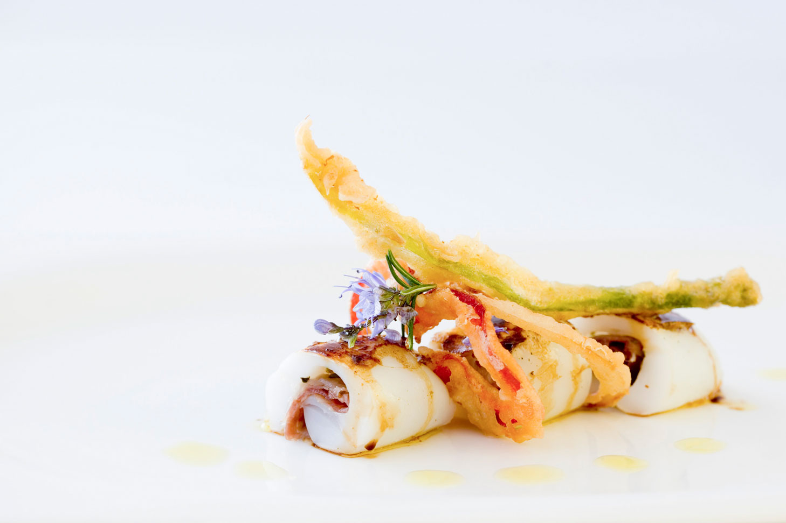
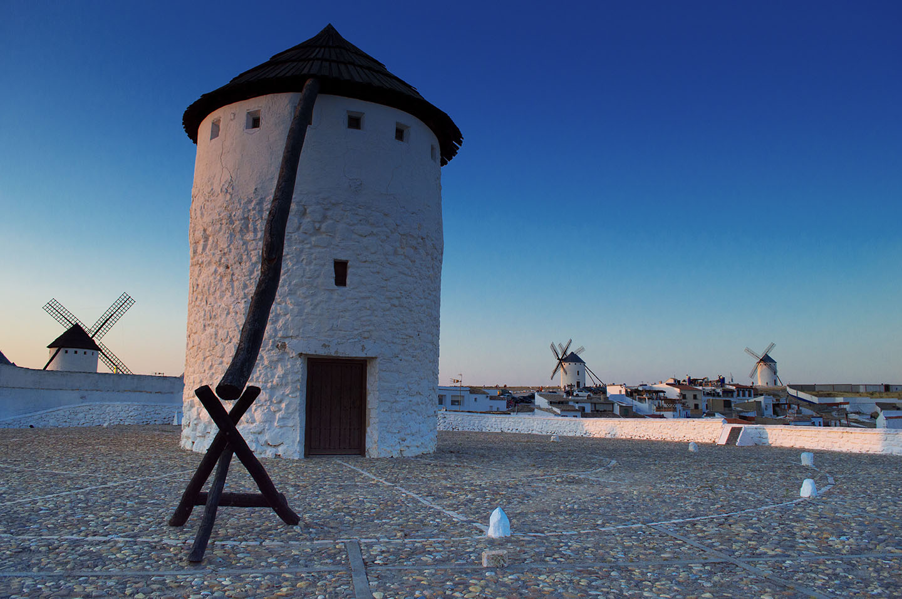
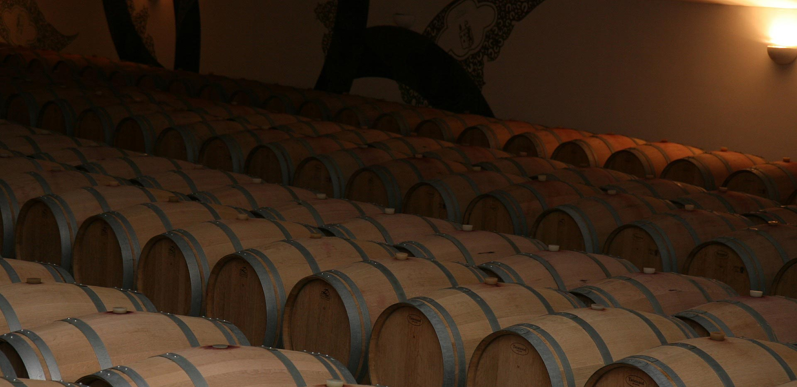

La Batalla contra los Gigantes: Burleta, Infanto y Sardinero
Conoce la historia del único cerro en el mundo que conserva tres molinos con maquinaria original del siglo XVI, descritos por Miguel de Cervantes.
Guía de Viaje Oficial & Directorio Local · Campo de Criptana
Descubre la esencia de Campo de Criptana. Una guía completa y actualizada con los horarios oficiales, localizaciones exactas en Google Maps y contactos directos de las mejores bodegas, restaurantes y monumentos históricos.
Directorio Exclusivo
 Monumento
Monumento
Los históricos gigantes de viento del siglo XVI. El icónico conjunto monumental que inspiró las aventuras de Don Quijote de la Mancha.
 Monumento
Monumento
Auténtica casa excavada en la piedra caliza en el Cerro de la Paz. Un testimonio vivo del modo de vida histórico de la comarca.

RestauranteGastronomía manchega de vanguardia a los pies de los molinos. Una de las mejores terrazas panorámicas al atardecer en la zona.

RestauranteCena íntima dentro de una majestuosa cueva natural del siglo XVI. Platos de asado tradicional castellano y gran bodega de vinos locales.
 Restaurante
Restaurante
Una pulpería y marisquería moderna con tapas exquisitas y un ambiente local vibrante. Delicias del mar en pleno corazón de La Mancha.
 Restaurante
Restaurante
Pizzas artesanales al horno de piedra y auténticos platos italianos en un ambiente acogedor y familiar.
 Restaurante
Restaurante
Comida tradicional manchega con raciones generosas y vistas inmejorables de la Sierra de los Molinos. Ricas raciones al lado de los molinos.
 Bodega
Bodega
Boutique familiar fundada en una bodega del siglo XIX. Ofrece selectas catas guiadas y paseos entre barricas de roble e historia.
 Bodega
Bodega
La cooperativa en activo más antigua de España (1897). Visita sus modernas instalaciones con degustaciones premiadas D.O. La Mancha.

BodegaTradición y modernidad desde 1930. Vinos elegantes y expresivos criados en barrica bajo la esencia de la comarca.
Reportajes e Historia
Conoce la historia del único cerro en el mundo que conserva tres molinos con maquinaria original del siglo XVI, descritos por Miguel de Cervantes.
Una guía paso a paso para perderse por el laberinto de cuestas encaladas y zócalos de pintura añil, descubriendo las mejores perspectivas fotográficas de la llanura.
¿Por qué las bodegas de Campo de Criptana maduraban sus mejores cosechas a 12 metros bajo el suelo? Un viaje sensorial a la D.O. La Mancha.
Atrae tráfico natural y clientes locales. Envíanos los detalles de tu negocio y te ayudaremos a destacar.
Tu solicitud ha sido enviada a luzemediamarketing@google.com. Nos pondremos en contacto contigo en menos de 24 horas.